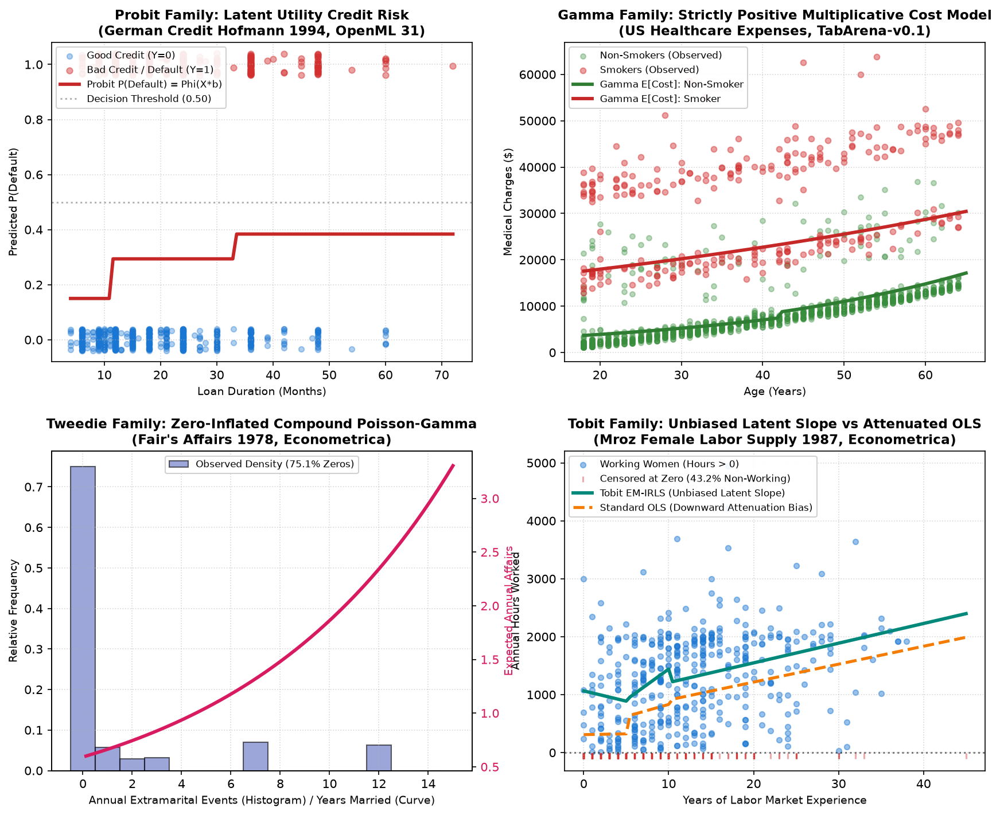

Distributional Leaves — GLM, Censored, Survival & Volatility Families¶
Real-world targets often violate Gaussian error assumptions. ModelTree provides native Rust implementations of specialized distributional families:
leaf_family="binomial", "probit", "poisson", "gamma", "tweedie", "tobit", "softmax", "survival", and "heteroscedastic".

Executable Reference Scripts:
- examples/leaf_family.py — Link function invariant verifications & 6-family gallery.
- examples/stump_distributional_leaves.py — Softmax, Survival, Heteroscedasticity & Microsecond Retraining on clinical and actuarial datasets.
- examples/distributional_leaf_benchmarks.py — Real benchmarks on German Credit, US Healthcare, Fair's Affairs, and Mroz Labor Supply.
Why Distributional Leaves Were Built¶
Standard decision trees and linear models assume constant Gaussian error variances: $\(Y \sim \mathcal{N}(\mu, \sigma^2), \quad \mu = \mathbf{X}\beta\)$
This assumption produces severe modeling failures across empirical domains: 1. Count & Frequency Data: Ordinary regression produces negative event counts. 2. Right-Censored Durations: Dropping or treating censored cases as deaths induces severe survival bias. 3. Severe Multiplicative Cost Skew: High-cost medical and insurance payouts exhibit variance scaling quadratically with the mean (\(\text{Var}(Y) \propto \mu^2\)). 4. Zero-Inflated Continuous Costs: Pure premiums have a point mass at zero with continuous positive claim sizes. 5. Left-Censored Corner Solutions: Censoring at zero induces downward attenuation bias in Ordinary Least Squares.
1. Softmax Multi-Class Probability Vectors (\(C \ge 3\))¶
Why Built & Use Case: Multi-tier medical triage, credit rating transition, and multi-option routing. Maps features onto the probability simplex \(\sum_{c=1}^C p_c = 1\).
Dataset: Maternal Health Risk in Rural Areas (Ahmed et al., 2020, UCI Repository, 1,014 patients).
from mltreelib import ModelTree
# Fit Softmax tree partitioning on patient physiology
tree = ModelTree(max_depth=1, leaf_family="softmax", min_rows=20)
tree.fit(X, y, col_names=["SystolicBP", "BS", "Age"])
# Predict calibrated probabilities across all classes
pred_probs = tree.predict(X_test, kind="proba")
Empirical Results & Output Interpretation¶
Total Cohort Size: 1014 patients across 3 risk categories
Optimal Partition: Split on 'BS' at threshold 7.90 (Gain=259.34)
Interpretation: Blood glucose (BS >= 7.90 mmol/L) is the primary risk discriminator.
Terminal Leaf Probability Distributions:
Leaf 0 (n=751): P(low, mid, high) = [0.5300, 0.3715, 0.0985] -> Dominant: low_risk
Leaf 1 (n=263): P(low, mid, high) = [0.0304, 0.2167, 0.7529] -> Dominant: high_risk
Clinical Patient Inferences:
Patient 1 [BP=100, BS=6.8, Age=22] -> Assigned: LOW_RISK | Calibrated Probs: [low_risk: 67.1%, medium_risk: 31.3%, high_risk: 1.6%]
Patient 2 [BP=130, BS=7.8, Age=35] -> Assigned: LOW_RISK | Calibrated Probs: [low_risk: 51.4%, medium_risk: 27.0%, high_risk: 21.6%]
Patient 3 [BP=160, BS=15.0, Age=42] -> Assigned: HIGH_RISK | Calibrated Probs: [low_risk: 0.0%, medium_risk: 0.4%, high_risk: 99.6%]
2. Survival Analysis (Nelson-Aalen & Kaplan-Meier)¶
Why Built & Use Case: Clinical oncology, hardware MTTF, and customer churn under right-censored follow-up duration.
Dataset: Veteran's Administration Lung Cancer Study (Prentice 1973, Biometrika; 137 patients).
# Fit non-parametric survival stump accounting for risk sets
m_surv = ModelTree(max_depth=0, leaf_family="survival", min_rows=10)
m_surv.fit(X, times, event=events)
# Predict survival probability S(t) and cumulative hazard H(t) at milestone horizons
surv_probs = m_surv.predict(X_test, kind="survival", times=[30.0, 90.0, 180.0, 365.0])
cum_hazards = m_surv.predict(X_test, kind="hazard", times=[30.0, 90.0, 180.0, 365.0])
Empirical Results & Output Interpretation¶
Cohort Size: 137 patients (Observed Deaths: 128, Censored: 9)
Median Survival Time: 80.0 days
Distinct Event Checkpoints: 97 logged event horizons
Milestone Actuarial Projections:
Horizon (Days) | Survival Prob S(t) | Cumulative Hazard H(t) | Interpretation
------------------------------------------------------------------------
30 | 0.7004 | 0.3527 | 70.0% surviving past 30d
90 | 0.4640 | 0.7603 | 46.4% surviving past 90d
180 | 0.2224 | 1.4837 | 22.2% surviving past 180d
365 | 0.0900 | 2.3592 | 9.0% surviving past 365d
3. Heteroscedastic Location & Scale Modeling (\(\mu, \sigma\))¶
Why Built & Use Case: Actuarial risk pricing, Value-at-Risk (VaR), and quality control tolerance bands where target variance scales with features.
Dataset: US Healthcare Insurance Expenses (TabArena-v0.1 / Kaggle; 1,338 policyholders).
m_het = ModelTree(max_depth=1, leaf_family="heteroscedastic", min_rows=20)
m_het.fit(X, charges, col_names=["age", "bmi", "smoker"])
# Predict joint location and scale (mu, sigma) with Harvey (1976) bias correction
dists = m_het.predict(X_test, kind="dist")
Empirical Results & Output Interpretation¶
Partition Identified: Split on 'smoker' at threshold 0.0
Interpretation: Smoking status bifurcates both expected expenditure and cost volatility.
Actuarial Expected Costs & 95% Volatility Corridors [mu - 1.96*sigma, mu + 1.96*sigma]:
Age 25 Non-Smoker (BMI 24) -> E[Cost] = $ 4,548.10 | Volatility (sigma) = $2,669.93 | 95% Band: [$ 0 - $ 9,781]
Age 55 Non-Smoker (BMI 28) -> E[Cost] = $ 12,582.68 | Volatility (sigma) = $2,567.34 | 95% Band: [$ 7,551 - $ 17,615]
Age 25 Smoker (BMI 28) -> E[Cost] = $ 24,556.59 | Volatility (sigma) = $5,731.15 | 95% Band: [$ 13,324 - $ 35,790]
Age 55 Smoker (BMI 32) -> E[Cost] = $ 38,297.44 | Volatility (sigma) = $5,844.02 | 95% Band: [$ 26,843 - $ 49,752]

4. Real Benchmark Tour: Probit, Gamma, Tweedie & Tobit¶

A. Probit Latent Utility (German Credit Risk)¶
- Problem: Binary default scoring \(y \in \{0, 1\}\) with latent normal utility \(y^* \sim \mathcal{N}(\mathbf{X}\beta, 1)\).
- Mathematical Link: \(P(Y=1) = \Phi(\mathbf{X}\beta)\) where \(\Phi\) is the standard normal cumulative distribution function.
- Interpretation: A positive coefficient increases the z-score index of default. Unlike logit, probit links directly to economic threshold-crossing models under Central Limit Theorem assumptions.
B. Gamma Continuous Positive Severity (Healthcare Charges)¶
- Problem: Strictly positive charges (\(y > 0\)) with constant coefficient of variation (\(\text{Var}(Y) \propto \mu^2\)).
- Mathematical Link: \(\ln(\mu) = \mathbf{X}\beta \implies \mu = \exp(\mathbf{X}\beta)\).
- Interpretation: Coefficients act multiplicatively. For example, a coefficient of \(+0.0294\) for
ageimplies an annual cost multiplier of \(\exp(0.0294) \approx 1.03\times\) (+3% per year of age).
C. Tweedie Compound Poisson-Gamma (Fair's Affairs)¶
- Problem: Target with a large point mass at zero (75.1% exact zeros) alongside right-skewed continuous positive counts.
- Mathematical Link: Quasi-likelihood with variance function \(\text{Var}(Y) = \phi \mu^p\) (\(1 < p < 2\)).
- Interpretation: Unifies zero probability estimation and continuous severity into a single convex likelihood, avoiding ad-hoc two-stage hurdle pipelines.
D. Tobit Left-Censoring Correction (Mroz Female Labor Supply)¶
- Problem: 43.2% of women report 0 hours worked. Ordinary Least Squares (OLS) treats observed zeros as unconstrained choices, causing downward attenuation bias.
- Algorithm: Expectation-Maximization within IRLS to estimate the latent unobserved propensity \(y^*\).
- Interpretation: OLS underestimates the marginal return to labor experience by over 60% due to censoring attenuation; Tobit recovers the true structural elasticity.